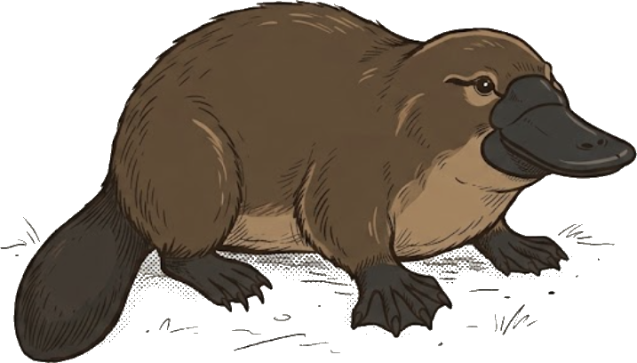

The work you're looking for is looking for you.

Finding work has become a numbers game.
People apply to more jobs. Employers receive more applications. Candidates learn to satisfy filters. Hiring teams add more filters.
Everyone is doing more, and understanding less.
Yumiwe starts with the person, not the résumé.
For people
Your experience is more than a document.
Yumiwe learns what you've done, what you're good at, what you want, and where you want to go. When an opportunity comes along, it helps you understand the fit and represent yourself truthfully — without starting over every time.
This is where we're starting. And it's free.For employers and recruiters
Tell Yumiwe who you're looking for.
Instead of searching through piles of résumés and trying to piece together who someone is, find and understand people based on the experience, capabilities and direction that actually matter.
Better discovery. Better matches. Less noise.The candidate-side product is in active development.
This is an early look at Yumiwe — not a launch. The video will live here.
A résumé isn't a person.
A job description isn't a job.
Yet we've built the hiring system around matching one to the other.
Yumiwe is built on a different idea:
Understand the person.
Understand the work.
Make better connections between them.
Who are you?
What have you actually done?
What do you want to do next?
What does this team actually need?
What work needs to be done?
Who might thrive there?
When both sides understand more, finding each other gets easier.
Not more applications.
Fewer needed.
A small team, early on.

Sets the direction for Yumiwe and what it means to represent a person honestly.

Leads the research behind how Yumiwe understands people and the work they do.